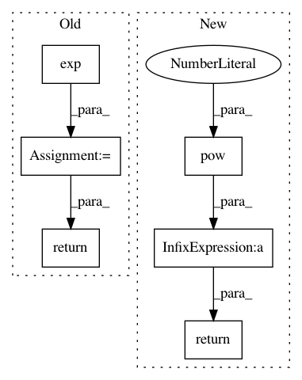

45a03ac258234ba49c0a43d46ae022493190591e,torch_geometric/nn/models/autoencoder.py,VGAE,kl_loss,#VGAE#Any#Any#,168
Before Change
torch.nn.init.xavier_uniform(self.z_var.weight)
def kl_loss(self, mean, logvar):
loss = torch.mean(0.5 * torch.sum(
torch.exp(logvar) + mean**2 - 1. - logvar, 1))
print(loss)
return loss
def reconstruction_loss(self, adj, edge_index, neg_adj_mask):
row, col = edge_index
loss = -torch.log(torch.sigmoid(adj[row, col])).mean()
After Change
return mu + torch.randn_like(logvar) * torch.exp(0.5 * logvar)
def kl_loss(self, mu, logvar):
return -0.5 * torch.mean(1 + logvar - mu.pow(2) - logvar.exp())
def loss(self, mu, logvar, pos_edge_index, neg_adj_mask):
z = self.sample(mu, logvar)
recon_loss = self.reconstruction_loss(z, pos_edge_index, neg_adj_mask)
In pattern: SUPERPATTERN
Frequency: 4
Non-data size: 6
Instances
Project Name: rusty1s/pytorch_geometric
Commit Name: 45a03ac258234ba49c0a43d46ae022493190591e
Time: 2019-03-26
Author: matthias.fey@tu-dortmund.de
File Name: torch_geometric/nn/models/autoencoder.py
Class Name: VGAE
Method Name: kl_loss
Project Name: rusty1s/pytorch_geometric
Commit Name: d08f673481a2cfaa0ce702e80cc22cdd25e600e5
Time: 2020-05-31
Author: matthias.fey@tu-dortmund.de
File Name: torch_geometric/nn/models/schnet.py
Class Name: GaussianSmearing
Method Name: forward
Project Name: mozilla/TTS
Commit Name: adf9ebd629abc21e0969db2a1c29f389b5301c9d
Time: 2019-11-12
Author: egolge@mozilla.com
File Name: layers/common_layers.py
Class Name: GravesAttention
Method Name: forward
Project Name: rusty1s/pytorch_geometric
Commit Name: 6ad34e5887f847aeb9f681e8f290d5877b76e52b
Time: 2020-05-13
Author: matthias.fey@tu-dortmund.de
File Name: torch_geometric/nn/models/schnet.py
Class Name: GaussianSmearing
Method Name: forward